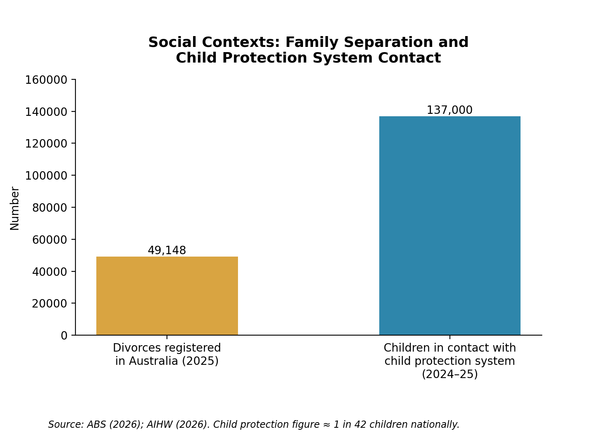

Social Contexts
Separation and divorce, and foster, kinship-care or out-of-home care, and their implications for early childhood education and care.
Understanding the Context
The concept of separation relates to the ending of relationships while divorce relates to the termination of marriages. Children may move between homes or into blended households – out-of-home care (OOHC) may involve foster, relative/kinship or residential care if required for safety.
Family Systems Theory recognises the interdependent nature of family relationships – changing one impacts roles and communications within the family system (Johnson & Ray, 2016). However, the nature of relationships does not fully account for statutory or structural inequalities. While cooperative elements may work well within the context of a range of family homes, sustained conflict creates competing expectations. The Australian Institute of Family Studies (AIFS, 2019) identifies various types of parenting arrangements – factors such as distance, transport and finances may impact such transitions. While kinship care can preserve elements of cultural belonging, it changes the roles of relatives – a factor which may result in disrupted routines and trust. Educators need to recognise both these elements as genuine educational partners while respecting ties to both birth-family and culture (Australian Government Department of Education [AGDE], 2022; McMahon & Camberis, 2017). For Aboriginal children, collaboration should respect community-led knowledge and decisions relating to culture, identity and connection (AbSec, n.d.). ECEC contributes in part through educator continuity and neutral engagement with authorised adults.
Impact on Children and Families
Moves within household or changed contact or care entry may influence sleep, concentration and attendance, regulation and participation with peers. The experiences of children may include grief, uncertainty, self-blame or loyalty conflicts – factors that apply to those entering OOHC in response to earlier adversity. Such effects are not inevitable – factors like age, length of placement, cooperation of caregivers and placement itself, presence of dependable adults and connections (siblings and cultural) all play a role in adjustment (Australian Institute of Health and Welfare [AIHW], 2019; Goemans et al., 2015). Families show adaptability. Educators should not interpret elements of distress or differing levels of caregiver involvement as family failure. Services require inclusive language, records and confidentiality, collection authorities and neutral communication.
Social Policy and Australian Responses
According to the Australian Government Attorney-General's Department (2024) the Family Law Amendment Act 2023 reforms coming into operation on 6 May 2024 simplify considerations of the best interests and drop the presumption of equal shared parental responsibility. Educators should comply with orders yet not assume shared decision making or responsibility – acting neutrally via specialist pathways when mediation proves unsafe. The Safe and Supported strategy prioritises prevention, participation and First Nations children though ECEC influence ultimately relies upon state implementation and local availability (Commonwealth of Australia, 2021). NSW's Permanency Support Program focusses upon preservation, restoration and alternative care options. However NSW Government reporting makes clear an evaluation indicated the goals were not achieved with increased expenditure relating to reduced service provision – leading to reform (NSW Department of Communities and Justice [DCJ], 2026). Within ECEC this makes communication with authorised carers and caseworkers and maintaining continuity despite placement changes the practice priorities. The country saw 49,148 divorces in 2025 – excluding de facto relationships (Australian Bureau of Statistics [ABS], 2026). There were 137,000 children in contact with the child protection system during 2024–25, with national statistics excluding most of Queensland (AIHW, 2026).

Strategies for Practice
Maintain relational continuity
Foster-care evidence identifies stability as more favourable adjustment – supporting, though not directly proving, the key-educator approach (Goemans et al., 2015). Retain one educator across transitions where practicable.
Trust and engagement
Establish predictable transitions
Family-development research confirms continuity as such a principle (McMahon & Camberis, 2017). Use visual schedules, warnings and rituals for arrival.
Regulation and participation
Represent family diversity
The EYLF V2.0 offers professional guidance rather than evidence of intervention effectiveness (AGDE, 2022). Include separated, blended, foster and kinship families with preferred terms within books, displays and play.
Identity and empathy
Support voice without burden
Children value participation but should not carry adult decisions (AIHW, 2019). Offer choices and develop drawing and feelings vocabularies whilst listening in ways that do not interrogate or require disclosure.
Agency and expression
Coordinate consent-based support
Interagency practice can indeed connect complex needs (Baker et al., 2022). With informed consent – unless law requires otherwise – make warm referrals and share information and follow up.
Coordinated assistance
Community and Professional Partnerships
Family Relationship Advice Line
Provides separation information and referrals when support is requested; educators do not give legal advice.
Visit website →Family Relationship Centres
Offer child-focused dispute resolution where appropriate; family violence or safety issues require specialist pathways.
Visit website →NSW DCJ or authorised OOHC caseworker
Coordinates with legal authority and care plans; collaboration may be statutory rather than voluntary.
Visit website →Barnardos Australia
Supports foster carers; collaboration occurs through the authorised provider and caseworker, not placement decisions.
Visit website →AbSec
Supports Aboriginal carers; collaboration occurs through community-led and culturally responsive support.
Visit website →Resources for Educators and Children
Projects, Programs or Websites
Educators/families: translate guidance into conversations and routines – strengthening adult understanding of adjustment.
Locate counselling and dispute resolution processes, with child-focused responses.
Australian educators: guide strengths-based approaches to relationships, participation and wellbeing.
NSW carers/educators: understand training, resources and financial assistance for responsive care.
Storybooks
 Two Homes
Two Homes Mum and Dad Glue
Mum and Dad GlueVoluntarily discuss self-blame without implying reconciliation or requesting disclosure.
 Murphy's Three Homes
Murphy's Three HomesPerspective-taking through a fictional dog's placement changes builds empathy and feelings vocabulary.
 Love Makes a Family
Love Makes a FamilyIdentify care across diverse families; indirectly supports inclusion rather than explaining OOHC.
Videos, Shows or Podcasts
 YouTube
YouTubeDiscuss fictional routines and caring adults, building understanding of transitions.
 YouTube
YouTubeShows separation is not children's fault and parental care continues.
 YouTube
YouTubeDiscuss belonging with “for-now” caregivers through fictional, voluntary responses.
 YouTube
YouTubeIntroduce care transitions and caring adults; adapt US terminology.
References
AbSec. (n.d.). Help for carers. absec.org.au/help-for-carers/
Australian Bureau of Statistics. (2026). Marriages and divorces, Australia, 2025. www.abs.gov.au/statistics/people/people-and-communities/marriages-and-divorces-australia/latest-release
Australian Government Attorney-General's Department. (2024). Children and family law. www.ag.gov.au/families-and-marriage/children-and-family-law
Australian Government Department of Education. (2022). Belonging, being and becoming: The Early Years Learning Framework for Australia (Version 2.0). www.acecqa.gov.au/sites/default/files/2023-01/EYLF-2022-V2.0.pdf
Australian Government. (n.d.-a). Family Relationship Advice Line. www.familyrelationships.gov.au/talk-someone/advice-line
Australian Government. (n.d.-b). Family Relationship Centres. www.familyrelationships.gov.au/talk-someone/centres
Australian Government. (n.d.-c). Family Relationships Online. www.familyrelationships.gov.au/
Australian Institute of Family Studies. (2019). Parenting arrangements after separation. aifs.gov.au/research/research-snapshots/parenting-arrangements-after-separation
Australian Institute of Health and Welfare. (2019). The views of children and young people in out-of-home care: Overview of indicator results from the second national survey, 2018. www.aihw.gov.au/reports/child-protection/views-of-children-young-people-oohc-2018/summary
Australian Institute of Health and Welfare. (2026). Child protection Australia 2024–25. www.aihw.gov.au/reports/child-protection/child-protection-australia-2024-25/contents/summary
Baker, E., Kaplun, C., & Dadich, A. (2022). Services working together to support children and their families. In R. Grace, J. Bowes, & C. Woodrow (Eds.), Children, families and communities: Contexts and consequences (6th ed., pp. 237–250). Oxford University Press.
Barnardos Australia. (n.d.). Foster care NSW & ACT. www.barnardos.org.au/foster-care/
Beer, S. (2018). Love makes a family. Hardie Grant Children's Publishing.
Commonwealth of Australia. (2021). Safe and Supported: The national framework for protecting Australia's children 2021–2031. www.dss.gov.au/safe-and-supported-the-national-framework-for-protecting-australias-children-2021-2031
Emerging Minds. (n.d.). Understanding the mental health and wellbeing of children in out-of-home care. emergingminds.com.au/resources/understanding-the-mental-health-and-wellbeing-of-children-in-out-of-home-care/
Gilman, J. L. (2008). Murphy's three homes: A story for children in foster care (K. O'Malley, Illus.). Magination Press.
Goemans, A., van Geel, M., & Vedder, P. (2015). Over three decades of longitudinal research on the development of foster children: A meta-analysis. Child Abuse & Neglect, 42, 121–134. doi.org/10.1016/j.chiabu.2015.02.003
Gray, K. (2009). Mum and Dad glue (L. Wildish, Illus.). Hodder Children's Books.
Johnson, B. E., & Ray, W. A. (2016). Family systems theory. In C. L. Shehan (Ed.), The Wiley Blackwell encyclopedia of family studies (pp. 782–787). Wiley. doi.org/10.1002/9781119085621.wbefs130
Masurel, C. (2001). Two homes (K. M. Denton, Illus.). Candlewick Press.
McMahon, C., & Camberis, A.-L. (2017). Family as the primary context of children's development. In R. Grace, K. Hodge, & C. McMahon (Eds.), Children, families and communities (5th ed., pp. 119–143). Oxford University Press.
NSW Department of Communities and Justice. (2026). Accountability and transparency: Historic reforms to foster care [Media release]. dcj.nsw.gov.au/news-and-media/media-releases/2026/accountability-and-transparency--historic-reforms-to-foster-care.html
NSW Department of Communities and Justice. (n.d.-a). Out-of-home care and Permanency Support Program. dcj.nsw.gov.au/service-providers/oohc-and-permanency-support-services.html
NSW Department of Communities and Justice. (n.d.-b). Support for foster carers. www.nsw.gov.au/community-services/foster-relative-and-kinship-care/become-a-foster-carer/support-for-foster-carers
Raising Children Network. (2024). Separation or divorce: Helping children and pre-teens adjust. raisingchildren.net.au/grown-ups/family-diversity/parenting-after-separation-divorce/helping-children-adjust-separation
Sesame Street in Communities. (2019, May 23). Sesame Street: Foster care [Video]. YouTube. www.youtube.com/watch?v=GF2w5qdn1-o
Sesame Street in Communities. (2020, May 5). A place for you [Video]. YouTube. www.youtube.com/watch?v=yy7eUsUCxYs
Sesame Street in Communities. (2021, January 21). Adjusting to two homes [Video]. YouTube. www.youtube.com/watch?v=7rbHzJIxHWg
Sesame Street. (2021, January 21). Abby Cadabby shares her experience with her parents' divorce [Video]. YouTube. www.youtube.com/watch?v=ajIPuwRSZRE